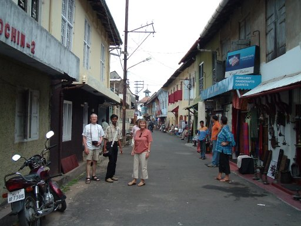
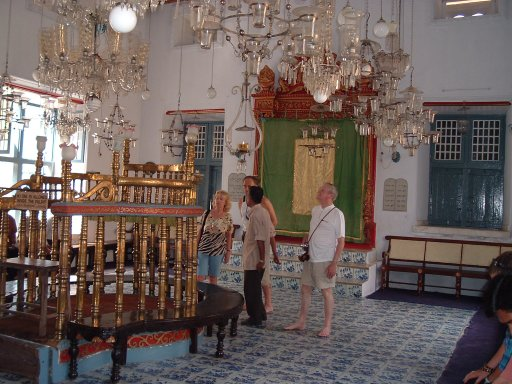
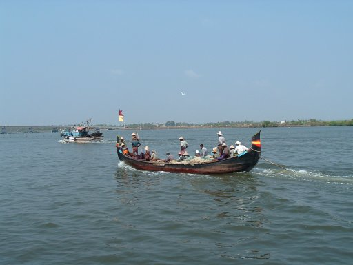
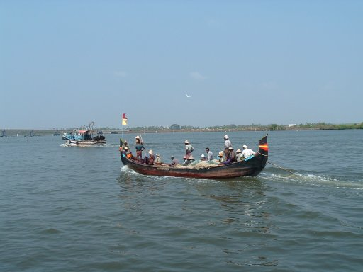

Cochin and Calangute
River Trip and Back to Base
Wednesday 16th February, we were met by Arun at 8.25 to go
down to the Train station and take a ride from Ooty (Udagamandalam)
to Coonoor. About a one hour journey. Only 7 RPs each. There he met
us and we set off on the long drive to Cochin. We drove till 11.00
and stopped for a pee, then on again until 2.00 when we stopped for a
cuppa. Marcelo took our photograph with the little finger crooked in
true British style. Before we left Valerie crossed the road and
bought a coconut from the elderly man with a stall on the opposite
side of the road. In the event we all ventured across and tried it. -
Very nice. He was so pleased with the unexpected customers that he
unlocked the gateway into a garden behind him and picked a flower and
returned to give to Valerie.- Another example here of the
extraordinary nature of the Indian folk. After having enjoyed another
pee, the cup of tea each and the chat with the coconut seller
opposite, I went up and paid for the four teas. 20 RPs As we were
getting back into the mini bus, the little man came running out to us
with the 20 RPs I had paid and said the other gentleman had already
paid!. - Mean sod that I am I accepted it back and gave him 5 RPs for
himself. Just amazing!
Arun was right. It was a long long way to Cochin. Although the
journey was long, the view from the mini coach window was always
fascinating. So much to see. Just as it was beginning to get dusk we
arrived finally at the Hotel Trident in Cochin. We said our farewells
to Arun who said he was going to drive all the way back to Bangalore
(12 hours) where he would begin the trips all over again. Here we
checked in and had a snack meal in the bar area before going to bed
early. I remember the rooms smelled damp and the windows did not
open. Valerie said her room smelled of lemon spray and damp mixed. It
was not good. After the excellence of Holiday Inn Ooty, I suppose we
had been spoilt. The next morning our new guide, Clive emerged. He
escorted us to the Jewish area in Cochin where we visited shops and
churches and finally the little Synagogue in Jewtown. It was built in
1568 and is the last remaining synagogue in India. At one time there
were in excess of 30,000 Jews living and working in India, but now,
in Cochin there are only 22 remaining. They have no Rabbi, but the
men take turns at conducting the services. The floor tiles were all
hand painted with willow patterns and every one is different, and
everything in such very good condition. - Quite amazing.
|
Cochin - Jewtown Main Street and the Synagogue
|
|
 
|
We took lunch in a local restaurant, The Hotel Abad. Really
excellent, and then we went down to the harbour where a boat was
waiting for us. It would have seated 20 /30 people, but there were
only four of us plus Clive the guide. We then set off on a very
memorable tour of the waters surrounding Cochin. Clive told us that
you could buy properties here for as little as £5,000 overlooking
the river estuary. Once the Island was only accessible by ferry
boat, but last year they built three enormous bridges which linked
the Island to the mainland by road, and now the whole lifestyle of
the people has changed. On our trip we saw the Chinese fishing
nets, lots of little boats trawling for fish. Dug out paddle boats
fishing, huge chinese long boats fishing. At various points along
the coast were jetties where fish markets were being held. At least
you could be sure your fish was fresh!
|
The Chinese fishing nets and some Chinese fishermen
|
  
|
After the two and a half hour trip around the waters of
Cochin, we went to a theatre where the local Folklore was retold
in dance and mime. Rather like a silent opera. First we watched
the two dancers being made up. That took an hour. Then we had a
demonstration of the hand signs used and the facial expressions
employed in the dances, and finally the dance itself.
|